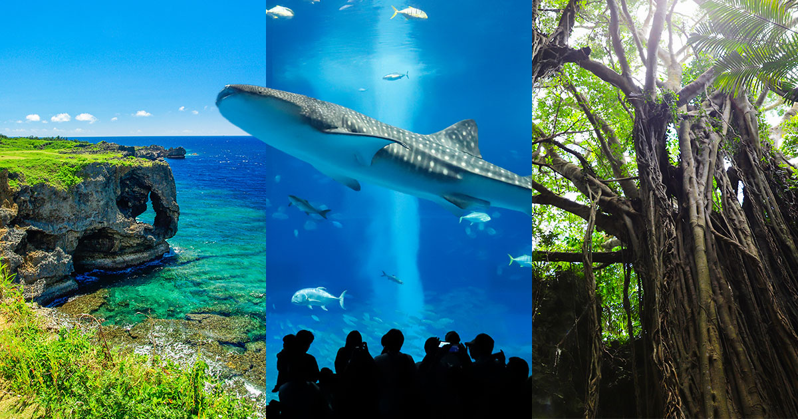

Sea
沖縄の魅力をぎゅっと体感できる、旅と文化の情報サイト。
沖縄の魅力をぎゅっと体感できる、旅と文化の情報サイト。

沖縄をバスで巡る本ツアーは、島の自然・歴史・文化を一度に体感できる、初心者にもリピーターにも人気の定番観光コースです。那覇市内を出発し、まずは沖縄の象徴ともいえる青い海を望む「万座毛」へ。断崖絶壁とエメラルドグリーンの海が広がり、写真撮影に最適なスポットです。その後、国内屈指の観光地「美ら海水族館」へ向かい、迫力あるジンベエザメの泳ぐ大水槽や、沖縄固有の海洋生態系をじっくり鑑賞します。
昼食には沖縄料理を楽しめるレストランへ立ち寄り、ゴーヤーチャンプルーや沖縄そばなど、地元の味を堪能できます。午後は、世界遺産にも登録された「首里城公園」へ。琉球王国の歴史と独自文化を象徴する朱色の城郭を巡り、ガイドによる解説で理解がさらに深まります。
帰路には、お土産ショッピングができるスポットに立ち寄り、紅いもタルトや琉球ガラス製品などを選べます。移動はすべてバスのため、運転の心配もなくゆったり過ごせるのが魅力。沖縄の魅力をぎゅっと凝縮した、効率よく楽しめる充実の観光ツアーです。
沖縄は美しいビーチや青い海だけでなく、琉球王国の歴史を伝える城跡や文化施設、個性豊かな市場やグルメスポットなど、多彩な観光名所が点在し、訪れる人々を飽きさせない魅力にあふれています。
